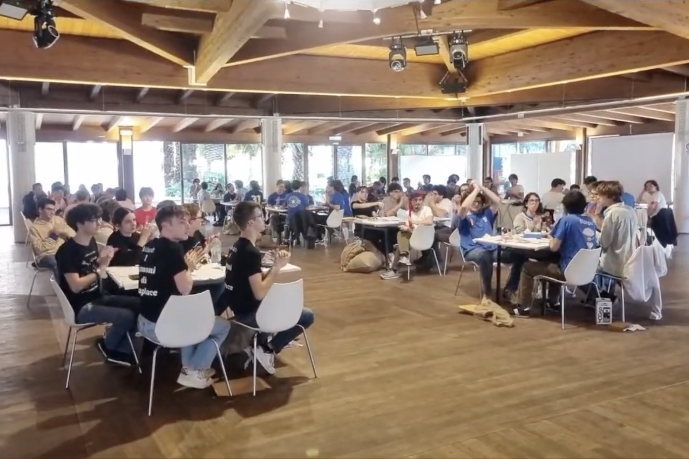
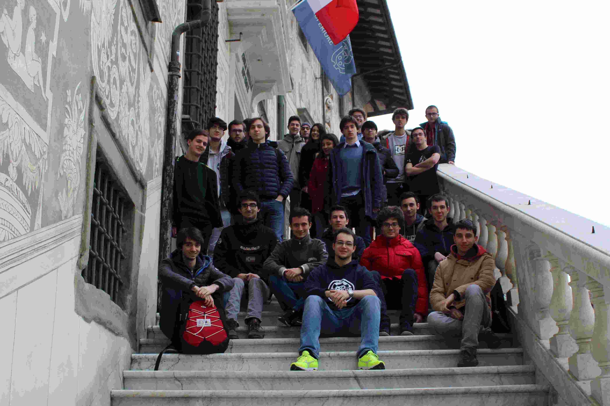
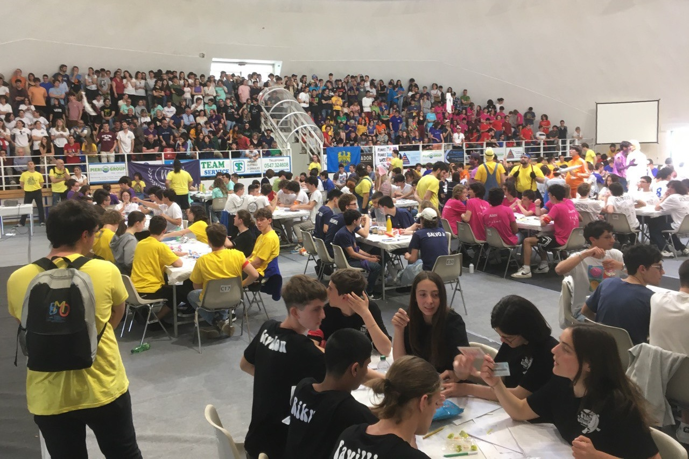

As a high school student, I took part in the Physics and Math Olympiads, winning gold medals at the Italian national finals of both, as well as a honourable mention at the International Physics Olympiad 2015 in Mumbai (India). The Olympiads significantly influenced my subsequent life choices, studies and career. Perhaps for this reason, I now enjoy volunteering to organize the competitions and a number of related events. I find it rewarding to help teenagers get into science through educational and intellectually stimulating activities like problem solving.

Team physics competition
The event I currently invest most of my energies in is the Italian team physics competition. The event is part of the Physics Olympiads and was founded in 2023 by a group of students (including myself) of Scuola Normale Superiore. We took the idea from the very successful team math competition, which has existed in Italy since the early 2000s. In each team, five high-school students cooperate to solve the problems and submit their solutions live, their score going up if the solution is correct or down otherwise, in a sport-like fashion. Several hundreds of high schools from all over Italy take part in the qualifiers. The best 30 teams are invited to the national finals in Senigallia, where the competition takes place in person.
I coordinate the scientific part of the activities. This means coming up with new problems, reviewing those proposed by others, selecting the best ones, and writing the final problem sheet. I am grateful to all members of our team for working hard enough to make the team competition a reality. Thousands of high-school students will remember it as their first experience with problem solving in physics, and this will perhaps contribute to their future choice of studies.
Here is an example of a problem proposed by me and used in the 2024 qualifiers.
A uniform cylinder, whose length is much longer than the diameter, has volume and density . One of its bases gets covered with a thin metallic layer of mass . The cylinder is immersed in water up to the waterline, with its axis perfectly vertical and the metal-covered base at the bottom. If is greater than a certain threshold , the cylinder remains in the position in which it is released. Conversely, if , the cylinder changes position immediately after being released. What is the value of ?
Other Olympiad activities
Although in the last two years I've primarily been focused on the team physics competition, from 2015 onwards I have organized multiple other Olympiad competition and related events. These are some of the most relevant.

Physics training camp in Pisa
In 2018, a group of students (including myself) of Scuola Normale Superiore founded a Winter training camp in Pisa focused on international-level Physics Olympiads, with the goal of improving the Italian performance over the years. Every year, 24 students from all over Italy are selected and come to Pisa for an intensive week of training. I lectured on geometric optics in 2018, on celestial mechanics in 2019 and on miscellaneous topics in 2020. After moving to Amsterdam for my PhD, I continued to collaborate, preparing the problems for the initial test in 2021, 2022, 2023 and 2024, as well as a number of other scientific and organizational aspects.

Math Olympiads
I am also a collaborator of the Italian Math Olympiads. I help organizing the national finals in Cesenatico and create new problems, mostly for the team competition. Here is a cool one.
Consider the polynomial
.
Define the function
by copying the expression of
and replacing every term of the form
with
.
What is the value of
?